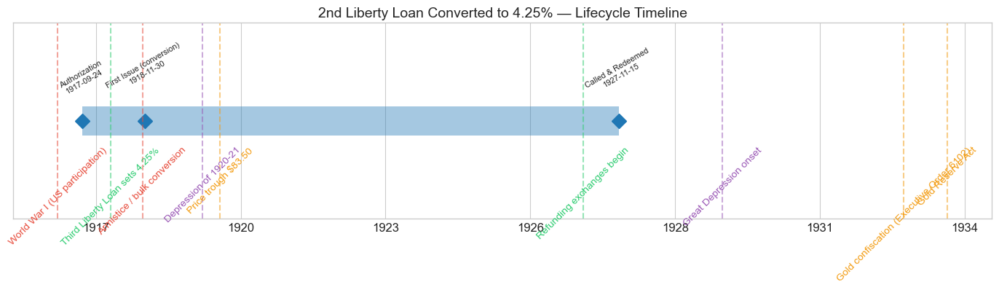
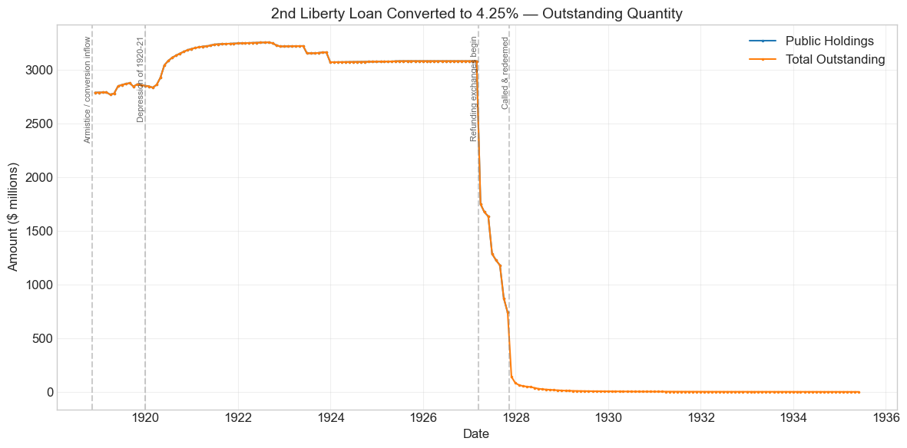
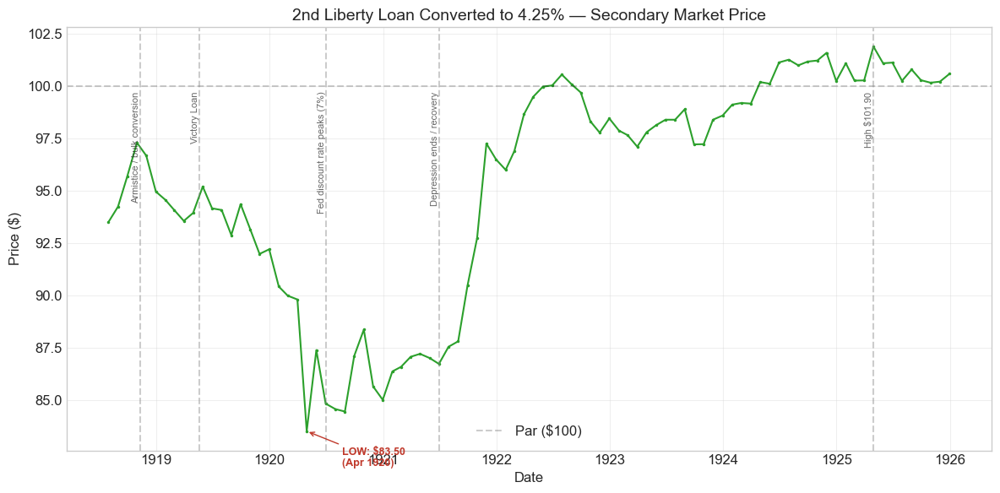
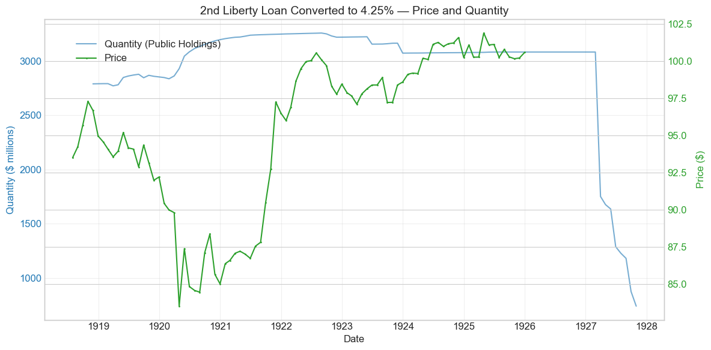
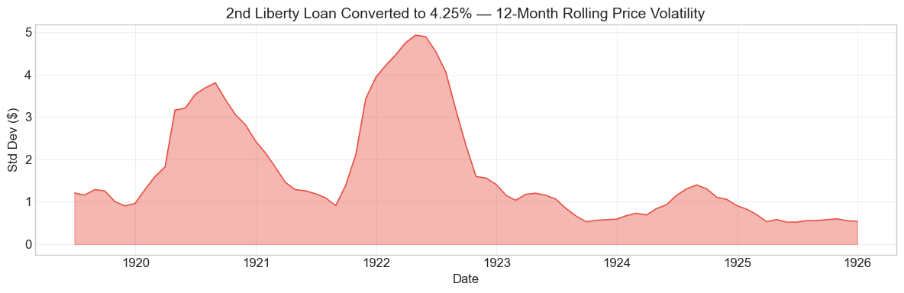

Bond Biography: 2nd Liberty Loan Converted to 4.25%#
An Enhanced Chapter from the Hall-Payne-Sargent US Federal Bond Database (2,857 issues, 1776–1960)
Bond ID (L1): 20167 Category: Interest Bearing > Marketable > Liberty Loan Coupon Rate: 4.25% First Issue Date: November 30, 1918 (the database’s recording of the bulk exchange; converted bonds came into existence from the spring of 1918) Term: 25 years – “bonds of 1927–42” (callable from November 15, 1927; maturing November 15, 1942) Created at Par: by exchange, \(100 of 4.25% bond for \)100 of 4% bond
This is a bond that was never sold. No campaign, no posters, no subscription books: every dollar of the more than $3 billion that eventually stood on the Treasury’s ledger under this title came into existence by exchange, as holders of the 4% Second Liberty Loan of 1917 surrendered their bonds for identical bonds bearing an extra quarter point of coupon. The 2nd Liberty Loan chapter records that migration as a cliff – a 77% single-month collapse in its outstanding quantity in November 1918. This chapter is the other side of that cliff: the receiving security, which absorbed the great conversion wave, became the workhorse long-term Treasury issue of the early 1920s market, and was retired in the largest refunding operation of the Mellon era, the call of November 15, 1927.
import pandas as pd
import numpy as np
import matplotlib.pyplot as plt
import matplotlib.patches as mpatches
import datetime
import warnings
warnings.filterwarnings('ignore')
plt.style.use('seaborn-v0_8-whitegrid')
plt.rcParams.update({'figure.figsize': (12, 6), 'font.size': 12,
'axes.titlesize': 14, 'axes.labelsize': 12})
# Load the bond database
store = pd.HDFStore('../data/BondDF.h5', mode='r')
BondList = store['BondList']
BondQuant = store['BondQuant']
BondPrice = store['BondPrice']
store.close()
# Drop one-month prints flagged as data artifacts (each is described in the chapter text)
ARTIFACT_PRINTS = [(20090, '1859-12-31'), (20133, '1919-12-31'), (20170, '1920-01-31'), (20166, '1920-05-31')]
for _id, _d in ARTIFACT_PRINTS:
for _s in ['Average', 'Coupon', 'Registered']:
if (_id, _s) in BondPrice.columns:
BondPrice.loc[pd.Timestamp(_d), (_id, _s)] = float('nan')
BondQuant_T = BondQuant.transpose()
BondPrice_T = BondPrice.transpose()
bond_id = 20167
print(f'Loaded data for: 2nd Liberty Loan Converted to 4.25% (ID: 20167)')
/Users/thomassargent/anaconda3/lib/python3.9/site-packages/pandas/core/arrays/masked.py:60: UserWarning: Pandas requires version '1.3.6' or newer of 'bottleneck' (version '1.3.5' currently installed).
from pandas.core import (
Loaded data for: 2nd Liberty Loan Converted to 4.25% (ID: 20167)
Overview#
The 2nd Liberty Loan Converted to 4.25% was authorized under the Second Liberty Bond Act of September 24, 1917 – the same standing statute that authorized its parent, the 4% Second Liberty Loan. It carried a coupon of 4.25% and is first recorded in the database on November 30, 1918, when roughly **\(2.79 billion** of converted bonds appear in a single month. The bond was active during World War I (US participation), the Depression of 1920--21, and -- statistically, as a dwindling residual -- the onset of the Great Depression. During its lifetime on the secondary market, the bond's average price was \)95.4, ranging from \(83.50 to \)101.90 (based on 90 monthly observations from 1918-07-31 to 1925-12-31). Peak outstanding reached $3.26 billion on 1922-08-31.
The bond exists because of a promise. The Second Liberty Loan of October 1917 had been sold at par with a 4% coupon – below what an unsentimental market required – and to protect its 9.4 million patriotic subscribers the Treasury attached a conversion privilege: if a later war loan bore a higher rate, holders could exchange into it. In April 1918 the Third Liberty Loan (Bond ID 20168) set its coupon at 4.25%, and the privilege sprang to life. Holders of the 4% Seconds converted en masse; the database records the bulk of the exchange in November 1918, the month of the Armistice, when public holdings of the 4s collapsed from \(3.64 billion to \)822 million and \(2.79 billion of this bond appeared in their place. Stragglers kept converting for years afterward, carrying the issue to its \)3.26 billion peak in 1922. The converted bonds kept every other term of the original Seconds – gold coupons, the 1927–42 call-and-maturity structure, the Second Loan’s tax status – and changed only the rate.
Two things make this bond’s story distinctive. First, it was the largest single product of the Liberty Loan conversion machinery – the receiving side of one of the largest voluntary debt exchanges the U.S. Treasury had ever conducted – and, after the Fourth Liberty Loan, the largest long-term Treasury issue outstanding in the 1920s. Garbade (2012) places the Second 4.25s among the benchmark issues of the young interwar Treasury market: with over $3 billion outstanding and millions of holders, it was one of the most heavily quoted and actively traded government securities of the early 1920s. Second, its endgame. As the first of the great war loans to reach its call date, it became the opening act of Andrew Mellon’s refunding program: called at the first legal opportunity, November 15, 1927, after a sequence of 1927 exchange offerings that rolled most of the issue into new securities yielding roughly a point less. The bond thus brackets the interest-rate cycle of 1917–1927 perfectly – born of rising rates, retired by falling ones.
Historical Context#
The following major events occurred during this bond’s lifetime:
Date |
Event |
Category |
|---|---|---|
1917-04-06 to 1918-11-11 |
World War I (US participation) |
War |
1917-09-24 |
Second Liberty Bond Act |
Legislation |
1918-04 to 1918-05 |
Third Liberty Loan (4.25%) triggers the conversion privilege |
Legislation |
1918-11-11 |
Armistice; bulk conversion recorded this month |
War |
1920-01-01 to 1921-07-01 |
Depression of 1920–21 |
Crisis |
1920-04-30 |
Price trough $83.50 |
Monetary |
1927-03 to 1927-09 |
Refunding exchange offerings under Mellon |
Fiscal |
1927-11-15 |
Call and redemption of the Second Liberty Loan |
Fiscal |
1929-10-29 to 1933-03-01 |
Great Depression onset |
Crisis |
1933-04-05 |
Gold confiscation (Executive Order 6102) |
Monetary |
1934-01-30 |
Gold Reserve Act |
Monetary |
The War and the Conversion Wave#
The bond’s birth was a wartime event, but not a fundraising one. When the Third Liberty Loan campaign of April–May 1918 fixed 4.25% as the new standard rate of American war finance, the Second Loan’s conversion privilege was triggered, and holders of 4% Seconds could exchange, par for par, into bonds identical in every respect except the coupon. Conversion was free and unambiguously profitable, and the overwhelming majority of holders took it. The price series in this chapter accordingly begins in July 1918 – four months before the bond’s recorded “first issue date” – because converted 4.25% Seconds existed and were quoted in the market from the opening of the conversion window in the spring of 1918, even though the database’s quantity ledger books the great bulk of the exchange in November 1918. Wartime demand and a Federal Reserve policy of keeping money rates low held the price in the mid-90s through the Armistice; like every Liberty issue, the bond never established itself above par during the war.
The Depression of 1920–21#
The postwar years treated the converted Seconds exactly as they treated the rest of the Liberty family, and this bond – the longest-dated issue of the group after the Fourth – felt the full force of the rate cycle. Inflation ran near 15% in 1919; the Federal Reserve, freed of its wartime duty to support the Treasury’s market, pushed the New York discount rate from 4.75% in late 1919 to 7% by June 1920. The bond’s price ground down from the mid-90s of 1919 to its lifetime low of **\(83.50 in April 1920** -- a holder who had dutifully converted a \)100 bond in 1918 watched it quote at \(83.50 eighteen months later. The quarter point of extra coupon protected income, not principal: the unconverted 4s bottomed at \)84.36 in the same summer, essentially the same level. The deflationary collapse of 1920–21 then reversed the process. As prices and interest rates fell, the bond staged a powerful rally – from the mid-80s in mid-1921 to $97.26 by November 1921 – regained par during 1922, and traded quietly at or a little above 100 through the mid-1920s.
Mellon’s Refunding and the 1927 Call#
Throughout the 1920s, Treasury Secretary Andrew Mellon ran budget surpluses and systematically refinanced the wartime debt at the decade’s lower rates. The Seconds – “bonds of 1927–42” – were the first of the long Liberty issues to reach their call window, and the Treasury took the first legal opportunity. The whole Second Liberty Loan, this $3.1 billion converted issue together with the small residue of unconverted 4s, was called for redemption on November 15, 1927. Across the Treasury’s quarterly financing dates of March, June, and September 1927, holders were offered exchanges into new lower-coupon notes and bonds, and the balance was paid off in cash on redemption day. The quantity chart below shows the operation as three great stair-steps.
The Great Depression and After#
By the 1929 crash the bond had ceased to exist as a market instrument. The small “Total Outstanding” residual that the database carries through May 1935 – dwindling from about \(12 million in early 1929 to roughly \)1.1 million – represents called bonds never presented for redemption: certificates lost, forgotten, or kept as souvenirs, on which interest had ceased in 1927. The Great Depression, the gold confiscation of 1933, and the Gold Reserve Act thus fall within the bond’s statistical lifetime but after its economic death.
# Bond Lifecycle Timeline
fig, ax = plt.subplots(figsize=(14, 4))
# Key dates
dates = [('Authorization', '1917-09-24'), ('First Issue (conversion)', '1918-11-30'), ('Called & Redeemed', '1927-11-15')]
events = [('World War I (US participation)', '1917-04-06', 'war'), ('Third Liberty Loan sets 4.25%', '1918-04-06', 'legislation'), ('Armistice / bulk conversion', '1918-11-11', 'war'), ('Depression of 1920-21', '1920-01-01', 'crisis'), ('Price trough $83.50', '1920-04-30', 'monetary'), ('Refunding exchanges begin', '1927-03-15', 'legislation'), ('Great Depression onset', '1929-10-29', 'crisis'), ('Gold confiscation (Executive Order 6102)', '1933-04-05', 'monetary'), ('Gold Reserve Act', '1934-01-30', 'monetary')]
import matplotlib.dates as mdates
from datetime import datetime
# Plot bond lifetime bar
d0 = datetime.strptime(dates[0][1], '%Y-%m-%d')
d1 = datetime.strptime(dates[-1][1], '%Y-%m-%d')
ax.barh(0, (d1 - d0).days, left=mdates.date2num(d0), height=0.3,
color='#1f77b4', alpha=0.4, label='Bond Lifetime')
# Mark key dates
for label, date_str in dates:
d = datetime.strptime(date_str, '%Y-%m-%d')
ax.plot(mdates.date2num(d), 0, 'D', color='#1f77b4', markersize=10)
ax.annotate(f'{label}\n{date_str}', (mdates.date2num(d), 0.25),
ha='center', va='bottom', fontsize=8, rotation=30)
# Mark historical events
colors = {'war': '#e74c3c', 'crisis': '#9b59b6', 'legislation': '#2ecc71', 'other': '#95a5a6', 'monetary': '#f39c12'}
for name, date_str, cat in events:
d = datetime.strptime(date_str, '%Y-%m-%d')
ax.axvline(mdates.date2num(d), color=colors.get(cat, 'gray'), alpha=0.5, linestyle='--')
ax.annotate(name, (mdates.date2num(d), -0.25), ha='center', va='top',
fontsize=10, rotation=45, color=colors.get(cat, 'gray'))
ax.set_yticks([])
ax.xaxis.set_major_formatter(mdates.DateFormatter('%Y'))
ax.set_title('2nd Liberty Loan Converted to 4.25% — Lifecycle Timeline')
ax.set_ylim(-1, 1)
plt.tight_layout()
plt.show()

Bond Features#
Feature |
Detail |
|---|---|
Name |
2nd Liberty Loan Converted to 4.25% |
Authorizing Act |
Second Liberty Bond Act, September 24, 1917 (40 Stat. 288) |
Origin |
Created by conversion, at par, of the 4% Second Liberty Loan (ID 20166), under the conversion privilege triggered by the Third Liberty Loan’s 4.25% coupon (April 1918) |
First Issue Date |
November 30, 1918 (bulk exchange as recorded in the database; exchanges began in the spring of 1918) |
Term |
25 years – “bonds of 1927–42” (callable beginning November 15, 1927, maturing November 15, 1942) |
Coupon Rate |
4.25% |
Payment Frequency |
Semi-annual (May 15 and November 15) |
Callable |
Yes – and the call was exercised at the first opportunity, November 15, 1927 |
Convertible |
No further privilege – the 4.25% rate was final |
Payable in Coin |
Yes (gold) |
Price |
Par (\(100 of 4.25% bond for \)100 of 4% bond) |
Amount Outstanding |
\(2.79 billion recorded November 1918, growing to a peak of \)3.26 billion (August 1922) as late conversions accumulated |
Tax Status |
As for the parent 4% Seconds: exempt from state and local taxes and from the normal federal income tax; subject to federal surtaxes and excess-profits taxes |
Every substantive term except the coupon was inherited from the parent bond. That inheritance mattered most at the two ends of the bond’s life: at birth, because par-for-par exchange with unchanged terms made conversion frictionless and its value calculation trivial (a free quarter point of coupon); and at death, because the inherited 1927 call date – written into the original Second Loan of 1917 – was the lever by which Mellon’s Treasury retired the whole $3 billion issue fifteen years before maturity.
# Display full bond features from database
row = BondList.loc[20167]
display_cols = [
"Treasury's Name Of Issue", 'Authorizing Act', 'Term Of Loan',
'First Issue Date', 'First Redemption Date', 'Final Redemption Date',
'Coupon Rate', 'Coupons Per Year', 'Callable', 'Coin',
'Authorized Amount', 'Price Sold'
]
print('Bond Features from Database:')
print('=' * 55)
for col in display_cols:
if col in row.index:
print(f' {col:<30} {row[col]}')
Bond Features from Database:
=======================================================
Treasury's Name Of Issue 2nd Liberty Loan Converted to 4.25%
Authorizing Act September 24, 1917
Term Of Loan 25 years
First Issue Date 1918-11-30 00:00:00
First Redemption Date NaT
Final Redemption Date NaT
Coupon Rate 4.25
Coupons Per Year 2.0
Callable 1.0
Coin 1.0
Authorized Amount nan
Price Sold 1.0
Bond Quantity Over Time#
The bond’s outstanding quantity peaked at $3.26 billion on 1922-08-31. Public-holdings data span from 1918-11-30 to 1927-10-31 (108 monthly observations), with a residual “Total Outstanding” series of uncollected called bonds extending to May 1935.
The quantity path is the mirror image of the parent bond’s. Where the 4% Seconds’ chart shows a cliff – public holdings collapsing from \(3.64 billion to \)822 million in November 1918 – this chart shows the matching wall: **\(2.79 billion** appearing from nothing in the same month. There follows a long, gentle rise through 1922 as the remaining 4s trickled in, a dead-flat plateau at about \)3.08 billion through 1925–26, and then the three great stair-steps of 1927 as Mellon’s refunding exchanges dismantled the issue ahead of the November 15, 1927 call.
# Bond quantity over time
fig, ax = plt.subplots(figsize=(12, 6))
for stype in ['Public Holdings', 'Total Outstanding']:
try:
s = BondQuant_T.loc[(20167, stype)]
s = s[s.notna()]
if len(s) > 0:
ax.plot(s.index, s.values / 1e6, marker='.', markersize=3, linewidth=1.5, label=stype)
except KeyError:
pass
ax.set_title('2nd Liberty Loan Converted to 4.25% — Outstanding Quantity')
ax.set_xlabel('Date')
ax.set_ylabel('Amount ($ millions)')
ax.legend()
ax.grid(True, alpha=0.3)
events = {'1918-11-11': 'Armistice / conversion inflow', '1920-01-01': 'Depression of 1920-21', '1927-03-15': 'Refunding exchanges begin', '1927-11-15': 'Called & redeemed'}
for date_str, label in events.items():
d = pd.Timestamp(date_str)
ax.axvline(d, color='gray', alpha=0.4, linestyle='--')
ax.text(d, ax.get_ylim()[1]*0.97, label, rotation=90, va='top', ha='right', fontsize=8, alpha=0.7)
plt.tight_layout()
plt.show()

Quantity Analysis#
Three phases drove the quantity pattern:
1. The great inflow (November 1918). The database records **\(2.79 billion** of converted 4.25% Seconds in November 1918 -- the receiving side of the -77.4% single-month collapse documented in the 20166 chapter, in which public holdings of the 4% parent fell by roughly \)2.8 billion. The two series reconcile almost dollar for dollar: what left one ledger line entered this one. November 1918 is when the database records the bulk exchange; conversions were executed over the months surrounding it, which is why this bond was already being quoted in the price record from July 1918.
2. The long trickle of stragglers (1919–1922). The conversion privilege had made exchange free and unambiguously profitable, yet hundreds of millions of dollars of 4s were still unconverted at the end of 1918. They came in slowly: this bond’s outstanding rose from \(2.79 billion to \)3.20 billion by the end of 1920 and to its **\(3.26 billion peak in August 1922**, mirroring the continued shrinkage of the 4% parent (which fell to barely \)64 million by the end of 1921). Note in particular the spring of 1920: holdings here jumped by over \(100 million in May 1920 alone, the same months in which the 20166 series shows its -36.6% "quantity decrease" -- the same exchange, seen from opposite sides. The modest declines of late 1922 and 1923 (roughly \)27 million in September–November 1922, \(68 million in June 1923, \)92 million in December 1923) are consistent with the ordinary debt-retirement machinery of the surplus years – sinking-fund purchases and Liberty bonds received in payment of federal estate taxes – after which the series sits almost motionless at $3.084 billion from mid-1925 through February 1927.
3. Mellon’s refunding and the 1927 call. The endgame came in three stair-steps aligned with the Treasury’s quarterly financing dates. Public holdings fell from \(3.084 billion in February 1927 to **\)1.751 billion in March** (-43.2%), to \(1.288 billion in June** (-21.3% over the quarter), and to **\)875 million in September (-25.9%) as holders accepted successive exchange offerings into new Treasury notes and bonds carrying coupons in the neighborhood of 3.375–3.5%. The public-holdings series ends in **October 1927 at \(740 million**, and on **November 15, 1927** the called bonds were redeemed in cash: the "Total Outstanding" series drops to \)141 million that month and \(83 million by December. The residual that dwindles from about \)12 million in early 1929 to $1.1 million in May 1935 represents called bonds whose owners never presented them for payment – the same quiet census of forgetfulness observed for the parent 4s.
The bond was thus a way-station: created by one refinancing (upward in coupon, at the holders’ option, to protect them) and extinguished by another (downward, at the government’s option, to save the taxpayer money). Between the two, it spent a decade as the largest callable long-term issue on the Treasury’s books.
Secondary Market Prices#
Overall Statistics (1918-07-31 to 1925-12-31): Mean \(95.4, Range \)83.50–\(101.90, Std Dev \)5.32, 90 observations.
By Period:
Period |
Mean |
Std |
Min |
Max |
Obs |
|---|---|---|---|---|---|
Start to recorded issue (1918-07 to 1918-11) |
$95.48 |
$1.60 |
$93.50 |
$97.30 |
5 |
Recorded issue to end (1918-11 to 1925-12) |
$95.41 |
$5.43 |
$83.50 |
$101.90 |
86 |
A quirk of the record deserves note first: the price series begins in July 1918, four months before the bond’s recorded first-issue date. This is not an error. Converted bonds came into existence as soon as holders began exercising the conversion privilege in the spring of 1918 and were quoted in the market from then on; the quantity ledger simply books the bulk of the exchange in November. With that settled, the price history divides into the three acts common to every Liberty issue:
Wartime, below par (1918). The bond entered the record at \(93.50 in July 1918 and climbed with the tide of victory to **\)97.30 in October 1918**, its high-water mark for the next four years. Even 4.25% – the standard rate of the war program – was below what an unsentimental market required for a 1942 gold bond, and the price slipped back into the mid-90s after the Armistice.
The postwar slide (1919 – 1920). Postwar inflation, the Victory Loan’s competing 4.75% coupon (May 1919), and the Federal Reserve’s sharp tightening – a 7% New York discount rate by June 1920 – ground the price down month after month to its lifetime low of $83.50 in April 1920. It then spent the rest of 1920 pinned in the mid-80s. The holder who had converted in 1918 to capture an extra quarter point of coupon had captured exactly that and nothing more: the principal loss was the same as everyone else’s.
Recovery and the shadow of the call (late 1920 – 1925). As the 1920–21 depression broke the inflation and rates fell, the bond rallied hard: \(90.46 by September 1921, **\)97.26 by November 1921**, back through par in June 1922. Thereafter it traded in a remarkably tight band around 100, reaching its lifetime high of only **\(101.90 in April 1925**. The narrowness of that premium is itself informative: while the *non-callable* Thirds ran to \)102.70 in the same low-rate market, the converted Seconds’ price was capped by the approaching November 1927 call – no one pays much over par for a 4.25% coupon the Treasury can take away at 100. The series ends in December 1925 at $100.59, a bond gliding toward an early redemption the whole market could see coming.
# Annotated price chart
fig, ax = plt.subplots(figsize=(12, 6))
s = BondPrice_T.loc[(20167, 'Average')]
s = pd.to_numeric(s, errors='coerce').dropna()
if len(s) > 0:
ax.plot(s.index, s.values, marker='.', markersize=3, linewidth=1.5, color='#2ca02c')
ax.axhline(100, color='black', alpha=0.2, linestyle='--', label='Par ($100)')
ax.set_title('2nd Liberty Loan Converted to 4.25% — Secondary Market Price')
ax.set_xlabel('Date')
ax.set_ylabel('Price ($)')
ax.legend()
ax.grid(True, alpha=0.3)
events = {'1918-11-11': 'Armistice / bulk conversion', '1919-05-20': 'Victory Loan', '1920-06-30': 'Fed discount rate peaks (7%)', '1921-07-01': 'Depression ends / recovery', '1925-04-30': 'High $101.90'}
for date_str, label in events.items():
d = pd.Timestamp(date_str)
ax.axvline(d, color='gray', alpha=0.4, linestyle='--')
ax.text(d, ax.get_ylim()[1]*0.97, label, rotation=90, va='top', ha='right', fontsize=8, alpha=0.7)
# Mark the lifetime low
low_date, low_val = s.idxmin(), s.min()
ax.annotate(f'LOW: ${low_val:.2f}\n({low_date.strftime("%b %Y")})',
xy=(low_date, low_val), xytext=(30, -30), textcoords='offset points',
fontsize=9, fontweight='bold', color='#c0392b',
arrowprops=dict(arrowstyle='->', color='#c0392b'))
plt.tight_layout()
plt.show()

# Price and Quantity — dual-axis chart
fig, ax1 = plt.subplots(figsize=(12, 6))
# Quantity (left axis)
for stype in ['Public Holdings', 'Total Outstanding']:
try:
q = BondQuant_T.loc[(20167, stype)]
q = q[q.notna()]
if len(q) > 0:
ax1.plot(q.index, q.values / 1e6, color='#1f77b4', alpha=0.6, label=f'Quantity ({stype})')
break
except KeyError:
pass
ax1.set_xlabel('Date')
ax1.set_ylabel('Quantity ($ millions)', color='#1f77b4')
ax1.tick_params(axis='y', labelcolor='#1f77b4')
# Price (right axis)
ax2 = ax1.twinx()
p = BondPrice_T.loc[(20167, 'Average')]
p = pd.to_numeric(p, errors='coerce').dropna()
if len(p) > 0:
ax2.plot(p.index, p.values, color='#2ca02c', marker='.', markersize=2, label='Price')
ax2.set_ylabel('Price ($)', color='#2ca02c')
ax2.tick_params(axis='y', labelcolor='#2ca02c')
ax1.set_title('2nd Liberty Loan Converted to 4.25% — Price and Quantity')
ax1.grid(True, alpha=0.3)
fig.legend(loc='upper left', bbox_to_anchor=(0.1, 0.9))
plt.tight_layout()
plt.show()

Detected Price/Quantity Events#
The following significant movements were auto-detected:
Date |
Type |
Change |
Explanation |
|---|---|---|---|
1920-04 |
Price drop |
-7.0% |
The bottom of the postwar bear market. The Federal Reserve had raised the New York discount rate to 6% in January 1920 and would take it to 7% in June; long-term yields rose accordingly, and the bond fell from \(89.80 to its lifetime low of **\)83.50**. This is the deepest single-month leg of a decline that had been grinding on since early 1919 – a level-of-interest-rates phenomenon, not a credit event. The partial rebound to $87.38 in May 1920, before the price settled back into the mid-84s for the rest of the summer, may partly reflect quote noise near the bottom (compare the anomalous May 1920 observation flagged in the 2nd Liberty 4% chapter); the honest reading of 1920 is one of level, not of spikes. |
1927-03 |
Quantity decrease |
-43.2% |
Mellon’s refunding begins. With the November 15, 1927 call of the Second Liberty Loan in prospect, the Treasury opened the first and largest of its 1927 exchange offerings: public holdings fell from \(3.084 billion to \)1.751 billion in a single month as holders swapped called Seconds for new lower-coupon Treasury securities. The auto-detector found “no historical event” only because the event is the fiscal operation itself. |
1927-06 |
Quantity decrease |
-21.3% |
The second quarterly exchange, carrying holdings down to $1.288 billion. |
1927-09 |
Quantity decrease |
-25.9% |
The third exchange, to \(875 million. The public-holdings series ends in October 1927 at \)740 million, and the balance was redeemed in cash at the call on November 15, 1927 – consistent, month for month, with the endgame recorded in the 20166 chapter. |
Note what the detector did not find: no sharp price events after 1920. From 1922 onward the bond’s price moved within a band of a few dollars around par – the placid signature of a security whose remaining life was governed less by the interest-rate cycle than by the calendar of its own call.
Price Volatility#
Maximum drawdown: -14.2% (from peak on 1918-10-31 to trough on 1920-04-30)
Average monthly return: 0.093%
The chart below shows the 12-month rolling standard deviation of prices, indicating periods of high and low price stability. As for every Liberty issue, volatility peaks in 1920–21, when the Federal Reserve’s postwar tightening and the deflationary collapse that followed whipsawed long-term rates; a second, smaller hump in late 1921–22 is the upside volatility of the recovery rally. The bond’s -14.2% maximum drawdown sits between the shorter Thirds (about -12.7%) and the parent 4% Seconds (about -15.6%) – duration and the starting price, not sentiment, ranked the family’s suffering in 1920. The placid readings from 1923 onward show the bond in its final incarnation: a near-par workhorse security, enormously large and heavily traded, whose price had little left to do but wait for 1927.
# Rolling volatility (12-month window)
p = BondPrice_T.loc[(20167, 'Average')]
p = pd.to_numeric(p, errors='coerce').dropna()
if len(p) >= 12:
rolling_std = p.rolling(window=12).std().dropna()
fig, ax = plt.subplots(figsize=(12, 4))
ax.fill_between(rolling_std.index, rolling_std.values, alpha=0.4, color='#e74c3c')
ax.plot(rolling_std.index, rolling_std.values, color='#e74c3c', linewidth=1)
ax.set_title('2nd Liberty Loan Converted to 4.25% — 12-Month Rolling Price Volatility')
ax.set_xlabel('Date')
ax.set_ylabel('Std Dev ($)')
ax.grid(True, alpha=0.3)
plt.tight_layout()
plt.show()
else:
print('Insufficient data for rolling volatility (need >= 12 observations)')

Issuance, Distribution, and Redemption#
The bond was created at par – \(100 of 4.25% bond for \)100 of 4% bond – by exchange, not sale.
A Bond Acquired, Not Bought#
There was no campaign for this bond, because its holders had already been recruited. They were, at the start, the roughly 9.4 million subscribers of the October 1917 Second Liberty Loan drive – the households, banks, and corporations described in the 20166 chapter – who now exercised the conversion privilege that had been part of their original bargain. The mechanics ran through the same channels that had sold the original loan: bonds were presented through banks and the twelve Federal Reserve Banks, which handled the exchange of certificates, and the converted bonds preserved the original denominations, which reached down to $50 – small enough for the schoolteacher and the factory worker whom McAdoo’s campaigns had deliberately drawn into the government securities market.
The result was a security with the widest imaginable ownership: several billion dollars distributed across millions of small registered and coupon holders, alongside banks (which used Liberty bonds heavily as loan collateral, supported by the Federal Reserve’s preferential discount rates on war-paper) and institutions. That breadth, plus sheer size – after the Fourth Liberty Loan this was the largest long-term issue on the Treasury’s books – made the Second 4.25s a natural benchmark of the emerging Treasury market. Garbade (2012) documents how the dealer market of the early 1920s organized itself around the big Liberty issues; the converted Seconds, quoted continuously in New York throughout the period, were among its staple instruments.
Redemption: The Opening Act of Mellon’s Refunding#
The converted Seconds inherited the parent bond’s redemption terms: “bonds of 1927–42,” callable at par from November 15, 1927, due November 15, 1942. Throughout the 1920s Secretary Andrew Mellon ran budget surpluses and refinanced the war debt at the decade’s lower rates, and the Seconds – the first of the long Liberty loans to reach a call date – were the program’s biggest single prize. In the spring of 1927 the Treasury announced that the entire Second Liberty Loan would be redeemed at the first opportunity, and across its quarterly financing dates of March, June, and September 1927 it offered holders exchanges into new notes and bonds carrying coupons around 3.375–3.5% – roughly a full point below the 4.25% being retired. The database records the result as the three stair-steps analyzed above: \(3.08 billion of public holdings in February 1927 reduced to \)740 million by October, with the remainder paid off in cash on November 15, 1927.
The arithmetic of the decade is worth stating plainly, as the 20166 chapter states it for the parent: ten years to the month after the Armistice-month conversion wave gave this bond its $2.8 billion of substance, the government extinguished it early because 4.25% had become too expensive a rate to pay. Interest rates had made the bond, and interest rates unmade it.
Implications and Legacy#
The Receiving Side of the Conversion Experiment#
This bond is the principal exhibit of the Liberty Loans’ conversion experiment. The privilege had been invented to solve a political problem – how to sell below-market coupons to patriotic small savers without leaving them stranded when rates rose – and, judged by its own terms, it worked: when the Third Loan set 4.25%, some \(2.8 billion of Second Loan holders were lifted to the new standard rate at no cost. But the experiment also revealed the privilege's fiscal ratchet: every increase in the coupon on a new loan raised the cost of the old ones too, and the quarter point handed to this bond's holders cost the Treasury on the order of \)8 million a year for as long as the bonds ran. As the 3rd Liberty Loan chapter recounts, McAdoo drew the lesson immediately: the Third and all subsequent federal loans dropped the general conversion privilege. This bond is therefore both the privilege’s greatest product and the reason it was abolished.
The Workhorse of the Early Treasury Market#
Between its birth in 1918 and its call in 1927, the converted Second was one of the securities around which the modern U.S. Treasury market grew up. The war loans created, for the first time, a multi-billion-dollar stock of marketable federal debt held by millions of people, and the machinery that arose to trade it – the New York dealer market, continuous quotation, the Federal Reserve’s operations in government securities – is the direct ancestor of today’s Treasury market (Garbade 2012). Within that stock, the Second 4.25s stood out for size (second only to the Fourth Loan) and, in their final years, for their role as the test case of a new question: how does a market price an enormous callable bond as its call date approaches? The tight par-hugging band of 1923–25 in the data is the market’s answer, and the 1927 refunding that followed became the template – quarterly exchange offerings, announced calls, cash redemption of the residue – for the retirement of the Firsts and the giant Fourths in the 1930s.
The Below-Par Lesson, Seen from the Other Side#
The parent chapter tells the story of the small bondholder’s loss – \(100 certificates quoted at \)85 – as an argument about patriotic pricing. This chapter adds the corollary: conversion protected coupon, not principal. The holder who diligently exchanged into the 4.25s in 1918 rode the price down to $83.50 in April 1920 all the same, because no coupon adjustment could insulate a long gold bond from a 7% discount rate. The episode taught the Treasury that protecting retail holders of marketable debt against rate risk was impossible with coupon tinkering alone – a lesson that culminated, a war later, in the non-marketable savings bond, whose redemption value could never fall below cost.
Creditworthiness and the Rate Cycle#
Nothing in this bond’s history reflects doubt about the government’s willingness or ability to pay. Every semi-annual coupon was paid in gold; the principal was redeemed at par, fifteen years early, because the Treasury’s credit had improved so much that 4.25% money could be replaced with 3.5% money. The bond’s 16-point round trip below par and back was purely an interest-rate story, and its early death was a symptom of fiscal strength – the surpluses and refundings of the Mellon era – not weakness.
An Anecdote in the Data#
Two ghost signatures bracket the bond’s data. At the beginning, a price series that starts four months before the bond officially exists – the market trading a security the ledger had not yet caught up with. At the end, a “Total Outstanding” residual of called bonds that were never cashed, still carrying \(1.1 million on the books in May 1935, eight years after interest stopped. Between the phantom birth and the unclaimed remains lies the entire arc of a \)3 billion security that no one ever actually bought – and that several million Americans nevertheless owned.
References#
Primary Database#
Payne, J., Szoke, A., Hall, G. & Sargent, T. (2025). Quarterly Journal of Economics.
Primary Sources#
Second Liberty Bond Act, Act of September 24, 1917, ch. 56, 40 Stat. 288 (and subsequent amendments).
Third Liberty Loan Act, Act of April 4, 1918 (amending the Second Liberty Bond Act; its 4.25% coupon triggered the conversion that created this bond).
Annual Report of the Secretary of the Treasury on the State of the Finances, 1918, 1919, and 1927. Washington: Government Printing Office.
Scholarly Works#
Garbade, K. D. (2012). Birth of a Market: The U.S. Treasury Securities Market from the Great War to the Great Depression. MIT Press.
Kang, S. W. & Rockoff, H. (2015). “Capitalizing Patriotism: The Liberty Loans of World War I.” Financial History Review, 22(1): 45–78.
Rockoff, H. (2012). America’s Economic Way of War: War and the US Economy from the Spanish-American War to the First Gulf War. Cambridge University Press.
Friedman, M. & Schwartz, A. J. (1963). A Monetary History of the United States, 1867–1960. Princeton University Press.
Studenski, P. & Krooss, H. E. (1952). Financial History of the United States. McGraw-Hill.
Historical Sources#
Federal Reserve History. “Liberty Bonds.” Link
Silber, W. L. (2007). When Washington Shut Down Wall Street: The Great Financial Crisis of 1914 and the Origins of America’s Monetary Supremacy. Princeton University Press.
Tooze, A. (2014). The Deluge: The Great War, America and the Remaking of the Global Order, 1916–1931. Penguin Books.
Enhanced Bond Biography generated from the Hall-Payne-Sargent Bond Database. Original auto-generated chapter enriched with historical narrative, comparative analysis, and contextual annotations. Companion chapter to the 2nd Liberty Loan of 1917 (4%) – the parent issue whose conversion created this bond – and the 3rd Liberty Loan, whose 4.25% coupon triggered it.